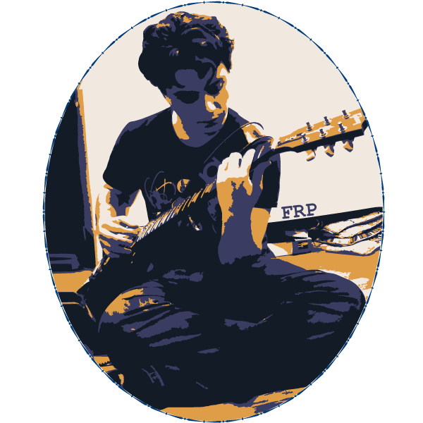

Raster Selfie created using Adobe Photoshop

Vector Avatar created using Adobe Illustrator
Vector Avatar created for Francesco P. using Adobe Illustrator
Animated Gif of a proportionately funny giraffe in a walk cycle created using Adobe Animate
'Click' Pop Art: my very first p5 program. Inspired by 60's pop art style, I made it so everytime the program is clicked on, the circles blow up and up until they pop and reset.
This is my semester animation project I created for my intro to 2D animation class. I love bees so I chose to do an animation of a bee emerging from his hive and flying to a patch of flowers and taking a sip of nectar. I call it, Bee-Hydrated (I can't take all the credit for the joke). I used Adobe Animate to create all the scenes and used Adobe After Effects to add the clouds, some editing and added the music. Thank you to Fracesco P. for his song, ABXY. It helped set the tone for my video. Anyway, enjoy!
My first ever audio project. We were tasked to record a story with a clear beginning, middle and end that a listener would be able to follow along well when hearing the recording. I chose to do a recording of some of my morning routines such as waking to my alarm clock, bushing teeth, having a quick cup of tea and leaving for my morning commute just like many others every single day. I assume most people have similar mornings and can relate and understand what they are hearing in the recording. I did seperate recordings for each task and edited through Audacity.
For this project I had to create a 10-second long video portaying an emotion. I chose the feeling of anxiety. Using a video I took of my son rolling down a hill and a video I took of an Iguana walking towards me in Aruba, I overlapped them to make it look like the Iguana was chasing him and he was rolling to get away. Eventually he rolls into a fit of fire. I call it "One Person's Nightmare" because for me, I might find my nightmare to be a giant lizard chasing my child. For my son or others, it might be falling into a pit of fire. For others, perhaps the music is enough to trigger this feeling of anxiousness/fear. I created this using Adobe After Effects.